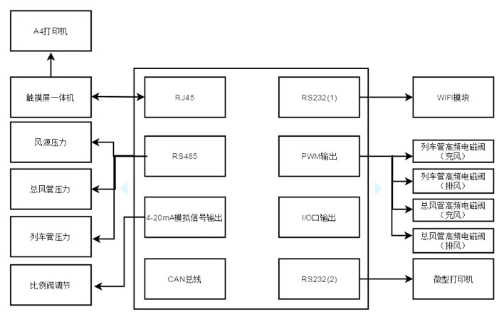

（1）车体为手推式单车车体为两轮式结构。箱体的2/3体积为储物箱，制动检修人员可用于放置工具、配件、材料。
（2）车体最外层箱体可安置各类风压、电压显示仪器、手动控制操作按钮（或旋钮）、微控操控终端；下面放置检修车辆必备工具、配件、材料等小型物品。
（3）车体车后置长大储物箱：上面也可放置检修车辆必备工具、配件、材料等长大物品。
（4）系统能够实现控制任意减压量的精确减压。
（5）系统可实时检测风源压力、列车管压力、总风管压力。
（6）触摸屏一体机中安装控制软件，可通过RJ45接口实时读取和控制单车的数据及试验。
（7）具有试验数据保存功能、以及打印数据试验报表功能。
（8）具有WIFI通讯功能，可接入手持机实现远程控制。
（9）具有无线风压检测仪数据接口。
（10）可控制总风管和列车管安一定速率充风、排风。
（11）可完成单车试验：漏泄、感度、安定、紧急、持续、保压、缓解、120安定、120紧急、电空试验等试验。
（1）软件系统运行稳定可靠，性能优异。
（2）车体为箱体结构，设计小巧轻便，车体结构简单：手推式单车车体为两轮式结构，前面设置两个大橡胶轮（轮径30mm±5mm），后面两个支撑架。并设有把手。
（3）采用高频阀配合PID算法，实现精准控制压力。
（4）采用总线方式采集压力传感器，精简了控制电路。